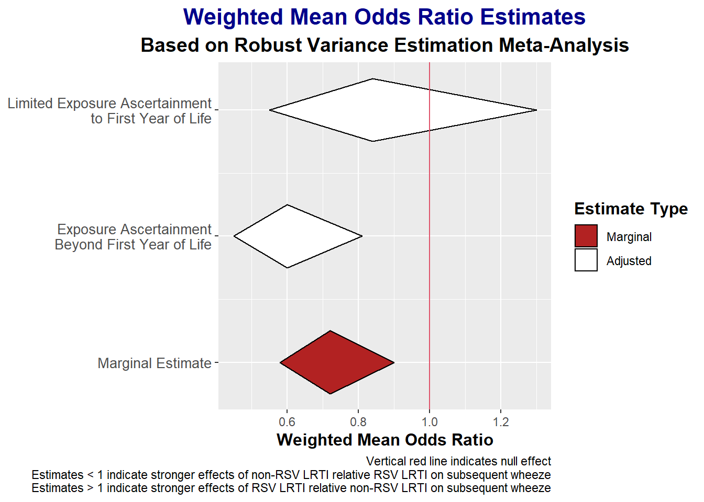

We used robust variance estimation (RVE) meta-analysis (1) to obtain aggregate effect estimates (\(OR_+\)) and confidence intervals in the robumeta package (version 2.0; (2)) in R (version 4.2.0). The RVE approach allows for inclusion of all relevant estimates from each study while yielding confidence intervals for the weighted mean estimates that have appropriate coverage. Unlike in multilevel meta-analysis, the RVE approach does not require knowledge (or well-informed estimates) of the within-study correlations among effect estimates (3). These within-study correlations are estimated crudely using cross-products of estimate residuals. As recommended by developers of the RVE approach, we used small-sample-size adjustments and Satterhwaite degrees of freedom (\(df\)), with model estimates with \(df<4\) considered unreliable (4). As the dependence in effect estimates was mainly attributable to having multiple clustered within studies, we used the correlated effect weights (3).
The marginal weighted mean effect estimate (\(OR_+\)) based on the unadjusted analysis showed that the data were compatible with reductions in odds of subsequent wheezing illness with RSV LRTI relative to non-RSV LRTI ranging from 10-42% with the point estimate indicative of a 28% reduction (\(OR_+\)=0.72, 95% CI: 0.58, 0.90 ).
As shown in Table X, there was insufficient evidence (with \(\alpha\) = .05) of effect modification by any of the a priori effect modifiers. However, there was considerable uncertainty in the estimates. There was a trend (\(\hat{\gamma}\) (df=35.21) = 0.34. 95% CI [-0.13, 0.80]) toward smaller effect estimates (nearer the null) among studies that limited exposure ascertainment to the first year of life (\(aOR_+\) = 0.84, 95% CI: [0.55, 1.30]) compared to those that did not (\(aOR_+\) = 0.60, 95% CI: [0.45, 0.81]) (see Figure X).
| Predictor | df | Estimate | Lower Bound 95% CI | Upper Bound 95% CI |
|---|---|---|---|---|
| Intercept | 32.1 | 0.60 | 0.45 | 0.81 |
| Exposure Ascertainment Period | 35.2 | 1.40 | 0.88 | 2.23 |
| Genetic Adjustment | 14.8 | 0.99 | 0.53 | 1.86 |
| Emergency Care or Hospitalization Required | 6.9 | 1.38 | 0.62 | 3.09 |
